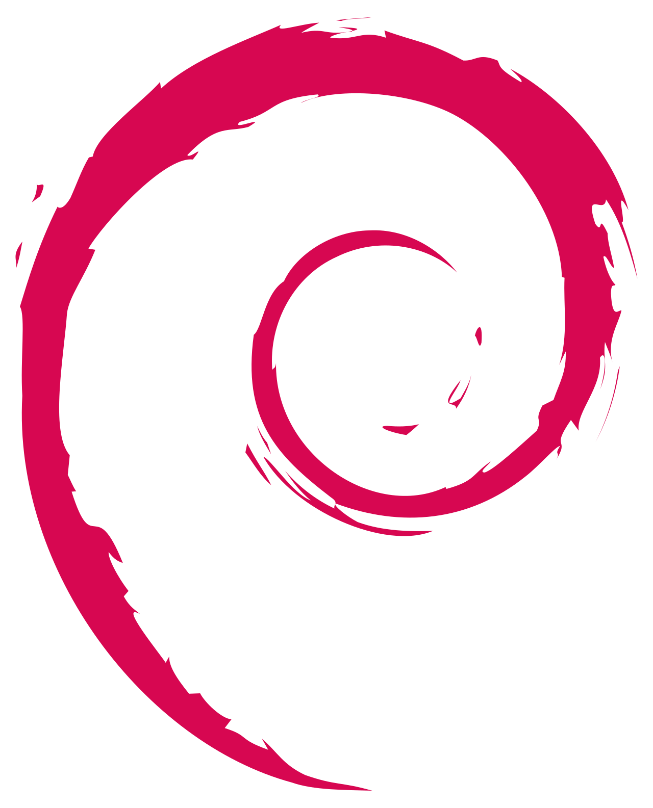
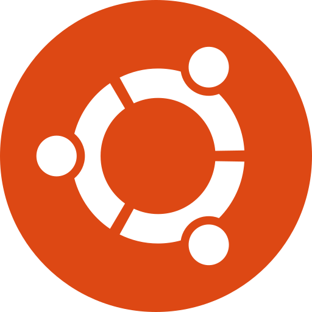

Compétences · Réseaux
Compétences techniques réseaux
Distributions Linux
Arch Linux
Arch Linux — " I use Arch btw " ( Arch Linux + Hyprland + Wayland + waybar + foot ).

DebianDebian — Pile LAMP (Linux, Apache2, MariaDB, phpMyAdmin), connection SSH, configuration de services.

UbuntuUbuntu — Pile LAMP (Linux, Apache2, MariaDB, phpMyAdmin), connection SSH, configuration de services.
Windows OS
Windows 10/11 — Utilisation et configuration du système d'exploitation Windows.
Windows Server — Administration et configuration de serveurs Windows : AD DS, DNS, DHCP, OU, GPO, permissions NTFS & partage.
Scripting
Bash — Scripting, automatisation, gestion des tâches sous Linux.
Batch — Scripting, automatisation, gestion des tâches sous Windows.
PowerShell — Scripting, automatisation, gestion des tâches sous Windows.
Protocoles & Services réseau
HTTP — Protocole de transfert hypertexte, méthodes GET/POST/PUT/DELETE, codes de statut, headers.
DHCP — Attribution dynamique d'adresses IP, réservations, étendues réseau.
DNS — Configuration de zones, enregistrements A/CNAME/MX/PTR, résolution de noms.
Annuaire & Administration
Active Directory (AD DS) — GPO, gestion des utilisateurs et groupes, stratégies de sécurité, OUs, permissions NTFS & partage.